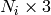
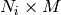
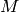
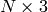
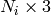

Classes
| tract_querier.tractography.Tractography([...]) | Class to represent a tractography dataset |
Functions
| tract_querier.tractography.tractography_from_vtk_files(...) | |
| tract_querier.tractography.tractography_to_vtk_file(...) |
Class to represent a tractography dataset
| Parameters : | tracts : list of float array 
tracts_data : dict of <data name>= list of float array of 
validate : bool
|
|---|
Methods
| add_tract_data_from_array(name, array) | Add a new data element reproducing a constant data |
| append(tracts[, tracts_data, validate]) | Append tracts and corresponding data to the current set |
| are_tracts_filtered() | |
| are_tracts_subsampled() | |
| filter_tracts(criterium) | Filter the tracts in the set according to a criterium function |
| filtered_tracts_map() | Tract indices included after the filtering |
| original_tracts() | Tract set used to original construct this |
| original_tracts_data() | Tract data contained of the original dataset of this tractography object |
| subsample_tracts(points_per_tract) | Subsample the tracts in the dataset to a maximum number of |
| tracts() | Tracts contained in this tractography object after filtering and |
| tracts_data() | Tract data contained in this tractography object after filtering and |
| unfilter_tracts() | Reset any filtering applied to the tracts |
| unsubsample_tracts() | Reset any subsampling applied to the tracts |
Add a new data element reproducing a constant data value for each of the  tracts.
After execution, the tract data will have a new set original_tracts_data()[name][i][:] == array[i]
| Parameters : | name : str
array : array of length
|
|---|
Append tracts and corresponding data to the current set
| Parameters : | tracts : list of float array
tracts_data : dict of <data name>= list of float array of
validate : bool
|
|---|
Filter the tracts in the set according to a criterium function
| Parameters : | criterium : function of array  -> Bool
|
|---|
Tract indices included after the filtering
| Returns : | List of tract indices included after the filtering : |
|---|
Tract set used to original construct this tractography object, no subsampling or filtering applied
| Returns : | tracts : list of float array 
|
|---|
Tract data contained of the original dataset of this tractography object
| Returns : | tract data : dict of <data name>= list of float array of
|
|---|
Subsample the tracts in the dataset to a maximum number of points per tract
| Parameters : | points_per_tract: int :
|
|---|
Tracts contained in this tractography object after filtering and subsampling if these operations have been applied
| Returns : | tracts : list of float array
|
|---|
Tract data contained in this tractography object after filtering and subsampling if these operations have been applied
| Returns : | tract data : dict of <data name>= list of float array of
|
|---|
Reset any filtering applied to the tracts
Reset any subsampling applied to the tracts